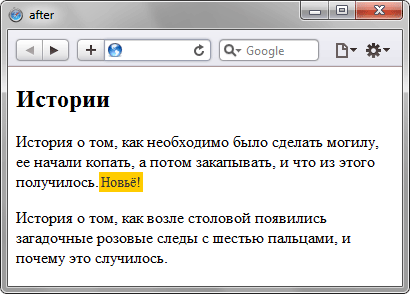

Псевдоэлемент ::after
Псевдоэлемент, который используется для вывода желаемого текста после содержимого элемента, к которому он добавляется. Псевдоэлемент ::after работает совместно со свойством content.
Для ::after характерны следующие особенности.
- При добавлении ::after к блочному элементу, значение свойства display может быть только: block, inline, none, marker. Все остальные значения будут трактоваться как block.
- При добавлении ::after к строчному элементу, display ограничен значениями inline и none. Все остальные будут восприниматься как inline.
Синтаксис
| CSS2.1 | |
| CSS3 | |
В CSS3 псевдоэлементы стали обозначаться двумя двоеточиями, чтобы синтаксис отличался от псевдоклассов.
Пример
<!DOCTYPE html>
<html>
<head>
<meta charset="utf-8">
<title>after</title>
<style>
p.new::after {
content: "Новьё!"; /* Добавляемый текст */
color: #333; /* Цвет текста */
background-color: #fc0; /* Цвет фона */
font-size: 90%; /* Размер шрифта */
padding: 2px; /* Поля вокруг текста */
}
</style>
</head>
<body>
<h2>Истории</h2>
<p class="new">История о том, как необходимо было сделать могилу,
ее начали копать, а потом закапывать, и что из этого получилось.</p>
<p>История о том, как возле столовой появились загадочные розовые
следы с шестью пальцами, и почему это случилось.</p>
</body>
</html>В данном примере в конце текстового абзаца, помеченного классом new, выводится определенный текст для привлечения внимания. Результат примера показан на рис. 1.

Рис. 1. Результат использования псевдоэлемента ::after
Спецификация
| Спецификация | Статус |
|---|---|
| CSS Transitions | Рабочий проект |
| CSS Animations | Рабочий проект |
| Selectors Level 3 | Рекомендация |
| CSS Level 2 (Revision 1) | Рекомендация |
Браузеры
| Internet Explorer | Chrome | Opera | Safari | Firefox | |
| :after | 8 | 1 | 4 | 4 | 1 |
| ::after | 9 | 5 | 7 | 4 | 1.5 |
| Android | Firefox Mobile | Opera Mobile | Safari Mobile | |
| :after | 1 | 1 | 4 | 1 |
| ::after | 1 | 1 | 7 | 1 |